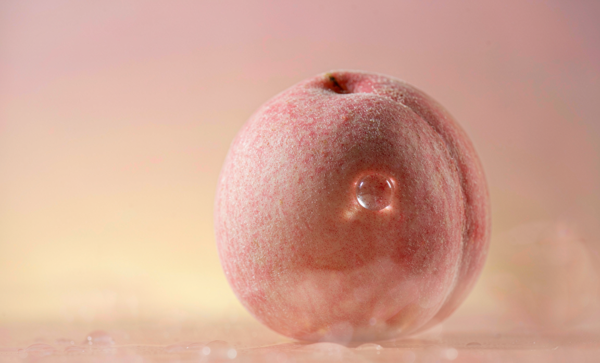
蒙阴蜜桃
中国桃乡 · 国家地理标志双认证
70余个主栽品种，5—10月鲜桃不断档；品牌价值266.44亿元，居桃类全国第一。
80.3万亩蜜桃种植面积
113万吨蜜桃年产量
266.44亿品牌价值
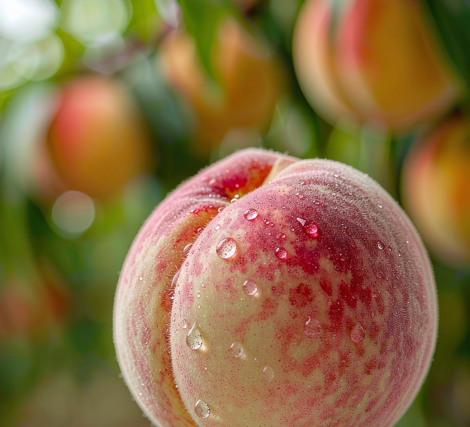
从一片红土地的专业凝视，到一个属于蒙阴的数字展馆
我们学的是"看山、看土、看水、看生态"。在专业课里才看清：蒙阴把荒山变果园、山货卖全国，本质上是一方水土（地形、土壤、气候、水、生态）与一套绿色生产技术体系共同支撑的结果——这正是本专业最本分的研究对象。
作为沂蒙革命老区，这片红土地上"吃苦耐劳、敢闯敢干"从未走远。今天的新农人、村播与合作社，正用数字时代的方式，续写当年支前小车的故事。
乡村振兴需要被"看见"。我们用网页、交互与数据可视化，把"土特产"讲成"有根、有魂、有未来"的乡村叙事，回应"科创赋能"的时代命题。
所以，我们想做的不是一本特产宣传册，而是一座能让人"走进去"的数字馆——用年轻人的数字语言，把资源本底、沂蒙精神、绿色产业与品牌文创串成一条线，让蒙阴的好山好水好农法，被更多人看见。
一颗桃子的百亿版图 · 2025
好山好水好农法，孕育蒙阴风物 —— 农业资源与环境专业视角
蒙阴地处沂蒙山区，山、林、土、水、气五要素齐备，构成特色产业的物质根基。我们用农业资源与环境专业的眼光，拆解这片土地为何能长出好果子。
蒙阴资源本底：山体 — 林草 — 土壤 — 水网，一体共生
按土定肥、缺啥补啥，提高肥料利用率、减少面源污染。
精准施肥增施有机肥、替代部分化肥，改良土壤结构、提升地力。
改土提地力行间生草、以草养地，保水保肥、涵养生物多样性。
保水养地物理与生物防治为主，降低化学农药使用强度。
减药控害滴灌追肥精准到根，节水节肥、省工增效。
节水省工果—畜—沼—肥循环，废弃物资源化、绿色闭环。
绿色闭环红色热土上的绿色振兴 —— 新农人的时代答卷
沂蒙，是著名的革命老区。抗日战争与解放战争年代，这片土地上的乡亲以“水乳交融、生死与共”的骨肉深情托起胜利——红嫂用乳汁救伤员，沂蒙六姐妹摊煎饼、做军鞋、运弹药上前线，千百万辆小推车推出了“车轮上的胜利”。当年“最后一碗米送去做军粮，最后一尺布送去做军装”的乡亲后人，正用同样的韧劲，在同样的山岭上把荒坡种成果园，把山货卖向天南地北。
这里是红嫂的家乡、沂蒙六姐妹的故乡。战火年代，乡亲们"水乳交融、生死与共"，用小推车推出了胜利，也把"吃苦耐劳、敢闯敢干"刻进了骨子里。习近平总书记将沂蒙精神概括为——党群同心、军民情深、水乳交融、生死与共。
新时代沂蒙人把荒山变成果园，把合作社办成纽带，把直播间开进桃园。当年支前的那股劲，如今用在生态种植、品牌打造、电商出山上。
这十六个字，当年写在小推车和军鞋上；今天，写进漫山果园的枝头，写进直播间里那一声声"老铁们，咱蒙阴蜜桃甜！"的吆喝里。
"我家三代种桃。过去挑筐赶集，现在手机一点，蜜桃就发往南方大城市——老一辈想都不敢想。"
"抱团才能闯市场。入了合作社，一斤板栗从几块钱卖到十几块，山里货也有了身价。"
"守住这片蜜源林，蜂好、蜜好、山也好。绿水青山，真是咱的金山银山。"
当年支前的乡亲后人，如今架起手机，把山货卖向全国。一部手机，就是新时代沂蒙人的"支前小车"。
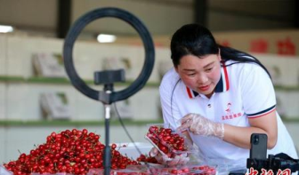
"以前只会种桃，现在对着镜头也能卖桃。一场直播，帮村里三十多户桃农把桃子卖光了。"
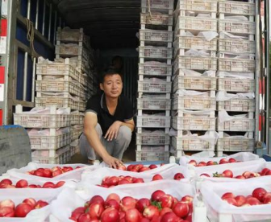
"大学毕业后回村开网店，把家乡板栗、蜂蜜卖到天南地北。乡亲们不用再为'卖难'发愁。"
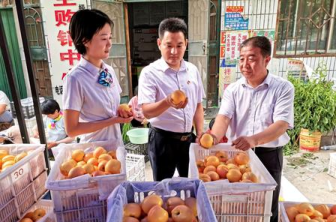
"我替分散的小农户统销。合作社溢价收购，地头价一斤能多卖好几块，守住的是乡亲们的腰包。"
沂蒙精神，从不是博物馆里的故事。它是今天漫山的桃林、直播间里的吆喝、合作社账本上那串红字——红土之上，绿业正兴。
蒙阴风物 · 一县一品

中国桃乡 · 国家地理标志双认证
70余个主栽品种，5—10月鲜桃不断档；品牌价值266.44亿元，居桃类全国第一。
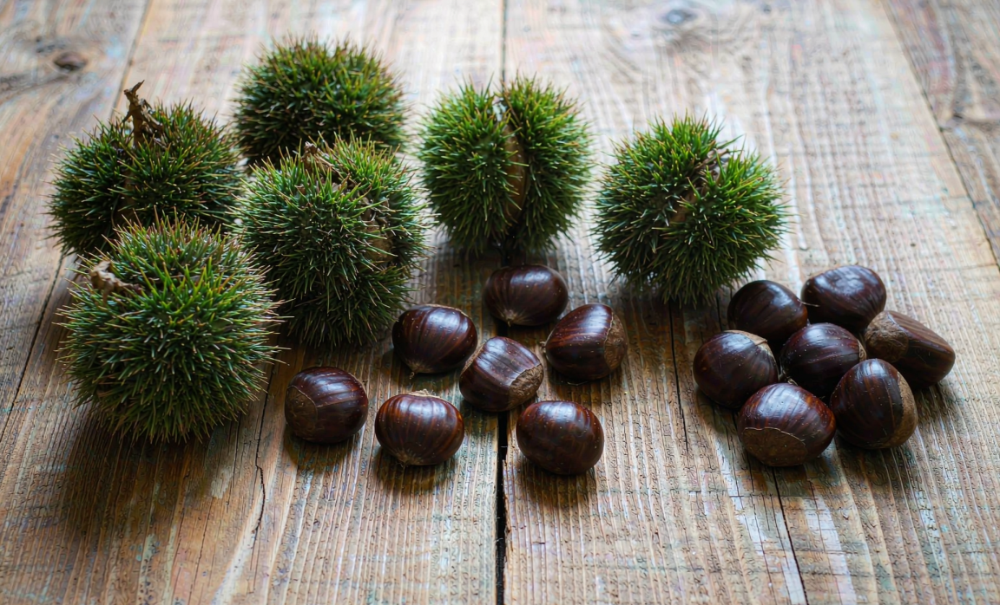
蒙山板栗，颗粒饱满、香甜软糯，是林下经济的代表特产。
点击查看详情 →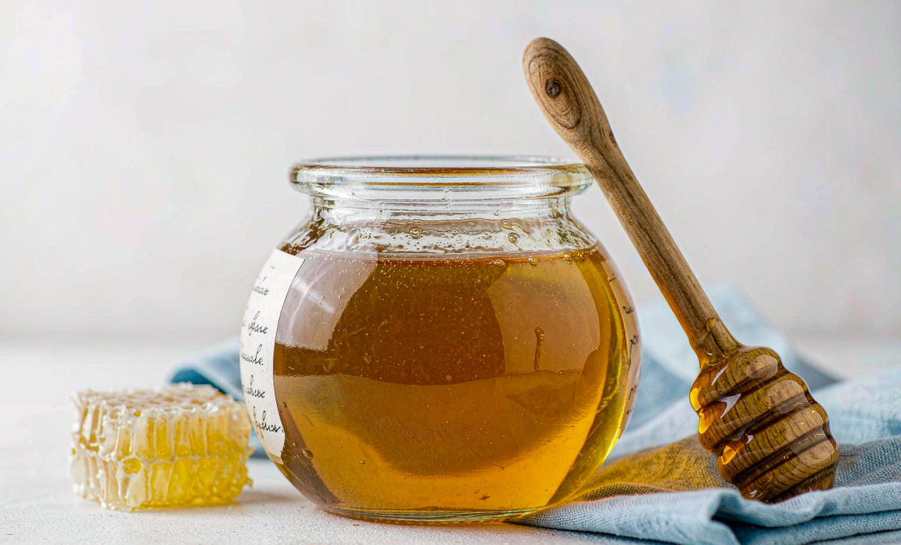
林蜂产业年产值突破13亿元、居全省第一，蜜源取自蒙山生态林。
点击查看详情 →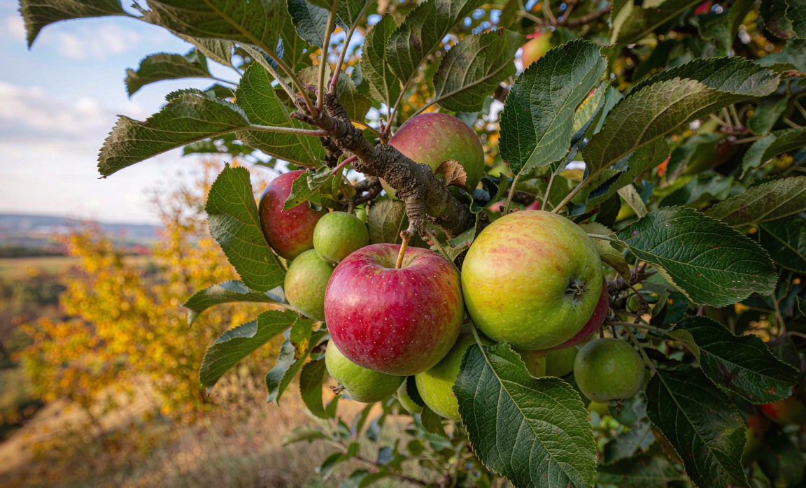
高山梯田种植，昼夜温差大、糖度高，是秋冬主力果品。
点击查看详情 →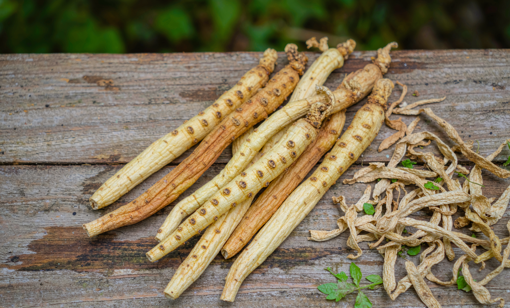
蒙山连翘、黄精等道地药材，林下育苗工程持续推进。
点击查看详情 →一颗桃子的科技之路 · 乡村振兴的蒙阴答案
中国农科院郑州果树研究所与蒙阴建立“科技包县”合作，培育出首个以蒙阴命名的蜜桃新品种“蒙阴蜜6号”，推动智慧果园管控与绿色防控落地。
现代标准化生产技术入户率超95%，从品种、品质到品牌同步升级，让山区果业走上科技兴农之路。
6000余家网商、6万电商从业者，2025年网上销售2150万单，惠及20多万果农，实现“当日采摘、当日发运”。
65座智慧冷库、总储量22万吨，冷链技术将蜜桃货架期延长一个月，错峰销售带动收益提升20%。
5000余辆果品运输车，800公里范围内次日送达，鲜果损耗率降至0.3%，山区鲜桃直发全国。
从一颗桃，到一种生活方式
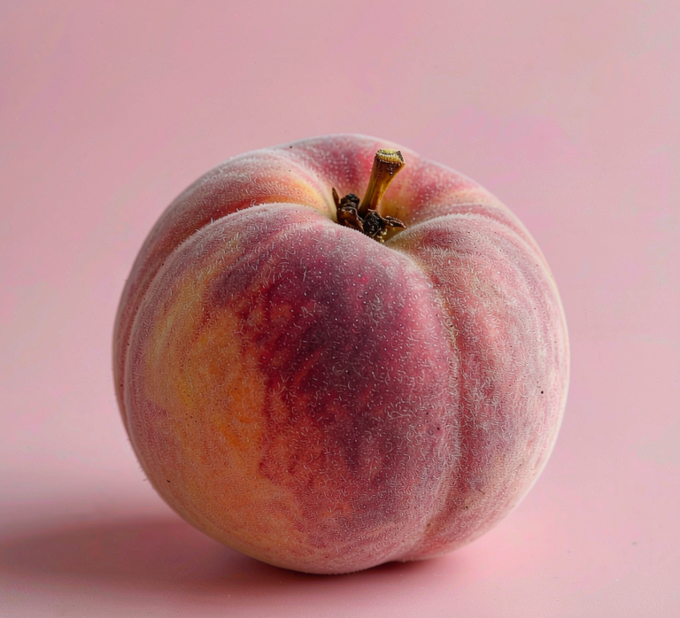
中国桃乡 · 数字品牌馆
80.3万亩 · 鲜桃不断档 一键溯源 · 产地直发 立即尝鲜 →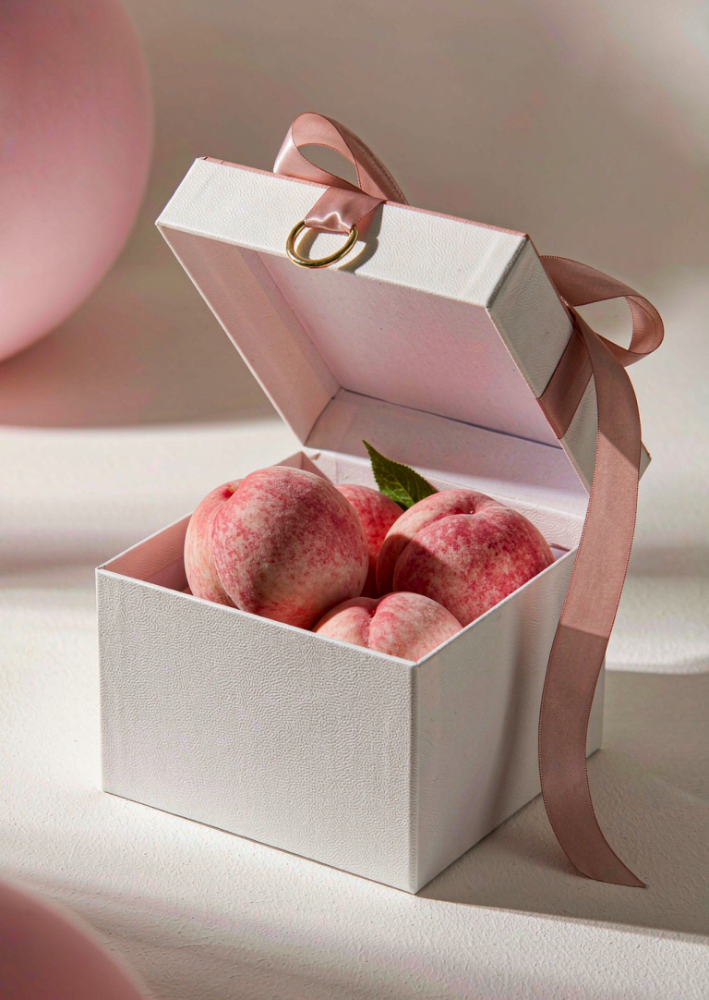
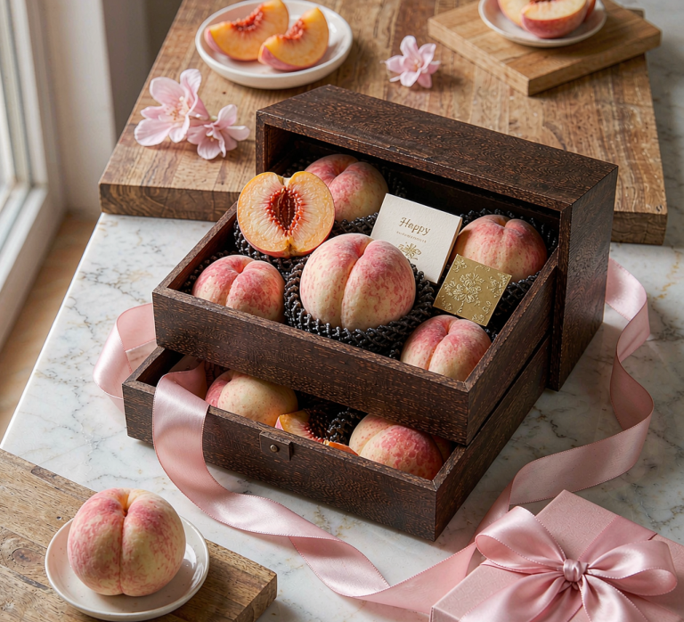
高端定制礼盒，按糖度智能分级；200吨冷库保障高峰期单日发货两万单。
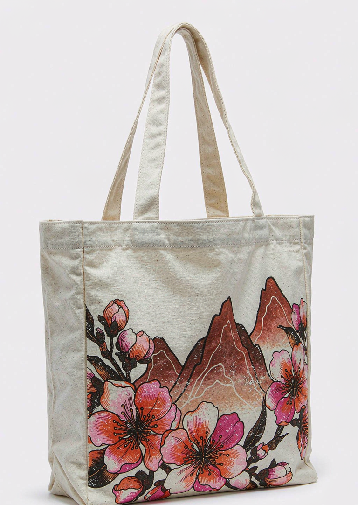
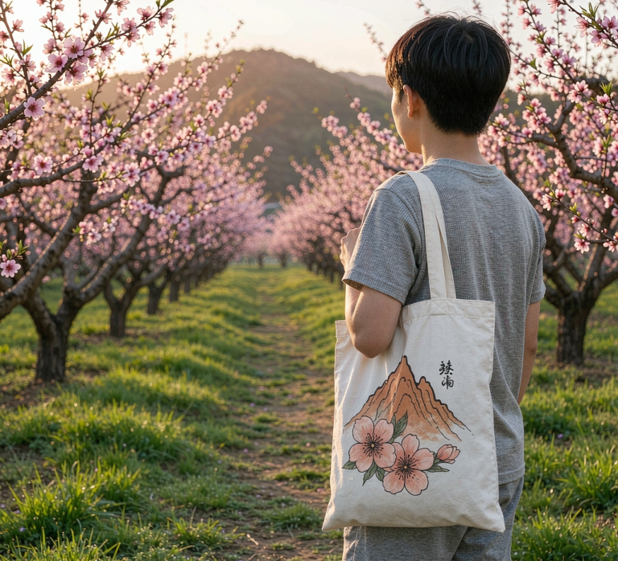
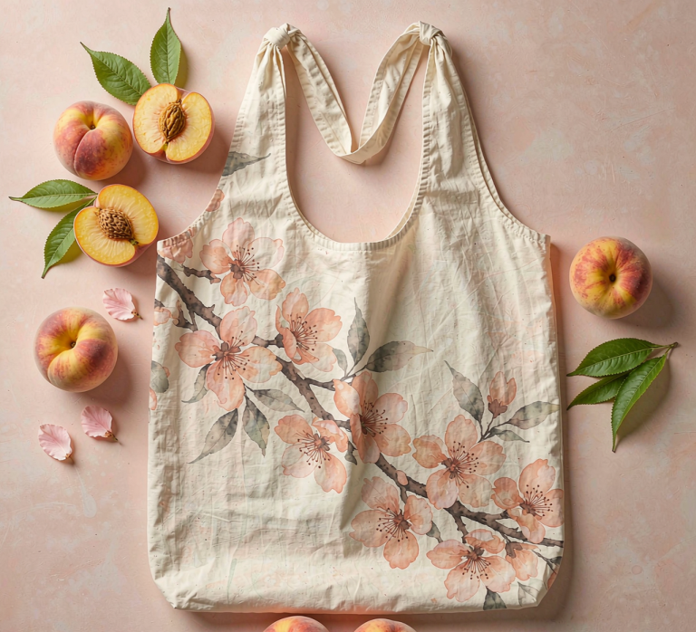
以蒙山轮廓与桃花为纹样的原创帆布包，文旅景区与直播间的热销周边。
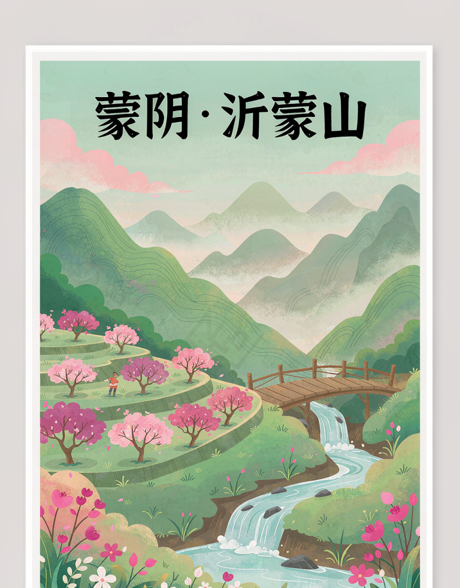
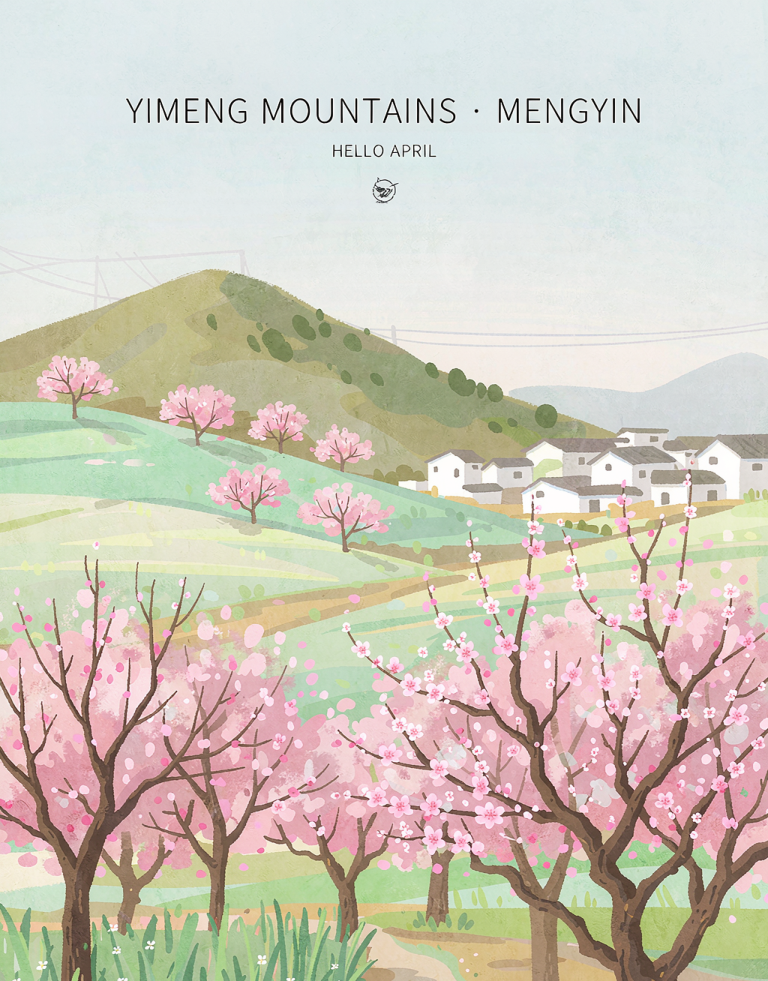
沂蒙风光系列手绘明信片，“电商+文旅”联动的打卡纪念品。
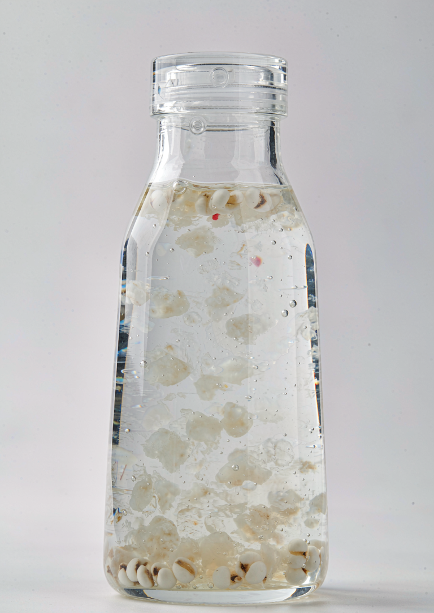
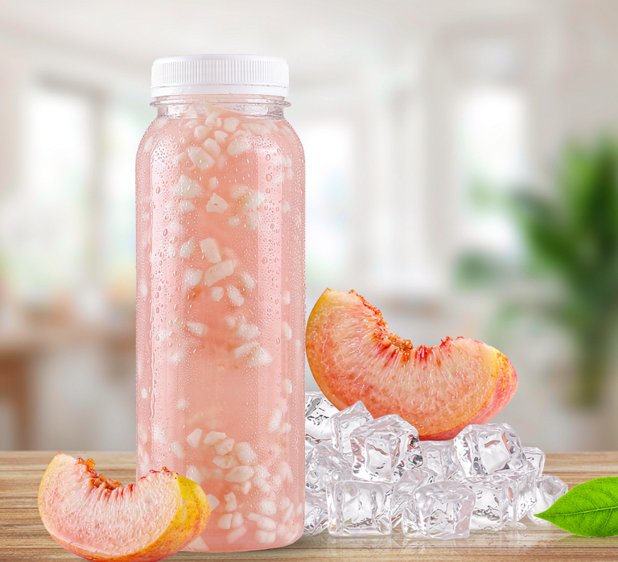
桃胶深加工饮品，延伸蜜桃价值链，随跨境电商远销海外。
蒙阴品牌数字馆 · 2026 第十四届全国大学生数字媒体科技作品及创意竞赛 参赛团队
本作品数据来源于蒙阴县人民政府、中国农业科学院郑州果树研究所等公开资料，部分指标为估算 / 待核实。感谢指导老师的悉心指导，感谢所有提供帮助的师长、伙伴与数据提供方。沃野之上，汇光而行——谨以此作，致敬每一寸土地与每一位耕耘者。
中国桃乡 · 数字品牌馆